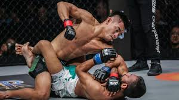
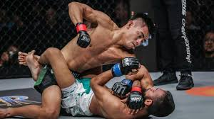

I'm a teacher and researcher in physics. I taught general physics, electromagnetism and optics, algorithms and TCE (expression techniques in french).
My field of research was the 'nuclear structure' . Since about 6 years, I changed my field of interest and I'm now working on quantum supersymmetry.
In addition to physics, I'm fascinated by many other fields including philosophy and hobbies like martial arts.
I'm working as a teacher at the National School of Built and Ground Works Inginering in Algiers and as
member of Theoretical Physics at USTHB university, Algiers.
 
